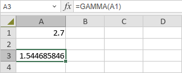

GAMMA funkcija
Funkcija GAMMA je jedna od statističkih funkcija. Koristi se za vraćanje vrednosti gama funkcije.
Sintaksa
GAMMA(number)
Funkcija GAMMA ima sledeći argument:
| Argument | Opis |
|---|---|
| number | Numerička vrednost. |
Napomene
Ako je number negativan ceo broj ili 0, funkcija vraća vrednost greške #NUM!.
Kako primeniti funkciju GAMMA.
Primeri
Slika ispod prikazuje rezultat koji vraća funkcija GAMMA.
